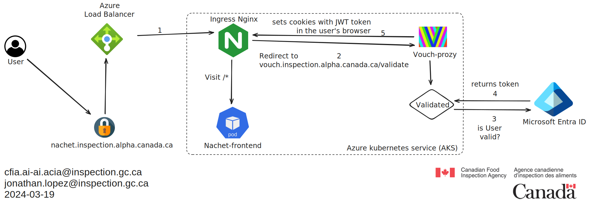

Documentation de Vouch-Proxy
Vue d'ensemble
Vouch-Proxy est une solution d'authentification et d'autorisation qui agit comme un compagnon pour notre contrôleur d'ingress Nginx. Il est conçu pour authentifier les utilisateurs via un fournisseur OpenID Connect (OIDC) puis passer ces informations d'identification validées à notre application web.
Intégration avec Azure Active Directory
Vouch-Proxy peut être configuré pour authentifier les utilisateurs via Azure Active Directory (Azure AD), en utilisant les enregistrements d'applications d'Azure pour authentifier les utilisateurs d'un locataire Azure AD spécifique. Cette configuration implique :
- La création d'un enregistrement d'application dans Azure AD.
- La configuration des URI de redirection pour l'enregistrement d'application à
<https://vouch.inspection.alpha.canada.ca/auth> - L'utilisation des détails de l'enregistrement d'application (ID client, secret client, tenantID) dans la configuration de Vouch-Proxy :
client_id: <id>
client_secret: <secret>
auth_url: https://login.microsoftonline.com/<tenantID>/oauth2/v2.0/authorize
token_url: https://login.microsoftonline.com/<tenantID>/oauth2/v2.0/token
Lorsqu'un utilisateur tente d'accéder à une ressource protégée, il est redirigé vers Azure AD pour se connecter. Une fois authentifié, Azure AD redirige vers Vouch-Proxy, qui valide ensuite la session de l'utilisateur et transmet les détails d'authentification au contrôleur d'ingress Nginx.
Annotations Nginx Ingress pour l'authentification
Pour protéger une application utilisant Vouch-Proxy, vous pouvez configurer des
ressources d'ingress Nginx avec des annotations spécifiques. Ces annotations
demandent au contrôleur Nginx de consulter Vouch-Proxy pour l'authentification
avant d'accorder l'accès à l'application. Voici comment configurer ces
annotations pour une app avec le nom d'hôte d'ingress
vouch.inspection.alpha.canada.ca :
annotations:
nginx.ingress.kubernetes.io/auth-signin: "https://vouch.inspection.alpha.canada.ca/login?url=$scheme://$http_host$request_uri&vouch-failcount=$auth_resp_failcount&X-Vouch-Token=$auth_resp_jwt&error=$auth_resp_err"
nginx.ingress.kubernetes.io/auth-url: https://vouch.inspection.alpha.canada.ca/validate
nginx.ingress.kubernetes.io/auth-snippet: |
# these return values are used by the @error401 call
auth_request_set $auth_resp_jwt $upstream_http_x_vouch_jwt;
auth_request_set $auth_resp_err $upstream_http_x_vouch_err;
auth_request_set $auth_resp_failcount $upstream_http_x_vouch_failcount;
Authentication Flow

-
Un utilisateur demande l'accès à une application protégée par Vouch-Proxy.
-
Le contrôleur d'ingress Nginx intercepte la demande et interroge Vouch-Proxy pour valider la session de l'utilisateur.
-
Si l'utilisateur n'est pas authentifié, il est redirigé vers la page de connexion Azure AD.
-
Après une authentification réussie, l'utilisateur est redirigé vers Vouch-Proxy.
-
Vouch-Proxy définit ensuite un cookie dans le navigateur de l'utilisateur et redirige l'utilisateur vers l'application d'origine, en transmettant les détails de l'utilisateur spécifiés.